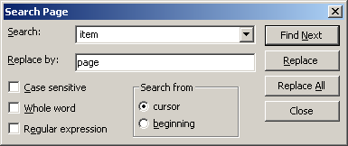

parent nodes: Intro7Searching | ItemSearching | RegEx
Find Replace
Contents:
Back
General
The WikidPad editor provides a find & replace facility for individual pages; it is a reasonably standard facility, like also word processors and other editors provide.

To start the find & replace dialog:press Ctrl-Rselect "Editor / Find and replace" from the main menu
A particular detail is that it supports regular expressions in the search field, but it doesn't do so by default. You have to check the "Regular expression" checkbox, to make it interprate the search criterion as a regex. In this mode you can use regex "escape sequences" in both the search and the replace pattern.
Top
previous: Back
parents: Intro7Searching, ItemSearching, RegEx
[help.status: done]